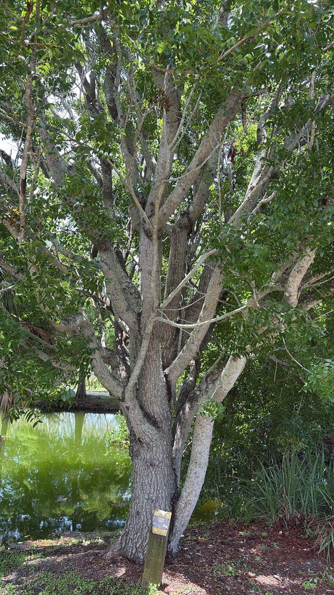

- Spanish shipbuilders prized this wood for hulls that shrugged off cannon fire, shipworms, and rot — long before Chippendale turned it into the prized furniture of Georgian England.
- Overharvesting left it threatened in Florida, so every specimen here is a small act of conservation.
- Native to the hammocks of the Keys and West Indies, it's the true mahogany that gave the entire wood category its name.
- Stately, historic, and increasingly rare in the wild.
Native to the West Indies and southern Florida, specifically hammocks of Dade and Monroe Counties down the Florida Keys. Listed as Threatened in the Preservation of Native Flora of Florida Act. It is the national tree of the Dominican Republic. This exploitation drove the species to threatened status in Florida — a tree so valuable it was nearly loved to extinction.
- Mahogany is one of the most coveted and historically significant timbers on earth. The wood's rich reddish-brown color, fine grain, and stability made it the choice material for Georgian England's finest cabinet makers — Thomas Chippendale worked almost exclusively with West Indian mahogany, and Hepplewhite and Sheraton followed.
- The furniture in grand houses across Britain and America that we now call 'antique mahogany' almost certainly came from this exact species, harvested from the Caribbean through the forced labor of enslaved people.
- This is the original mahogany — *Swietenia mahagoni* — the species that gave the entire wood category its name. The Honduras mahogany (*S. macrophylla*) that replaced it commercially is a different species. What grows at Palma Sola is the real thing: the tree that furnished the parlors of colonial America.
- In Florida, *S. mahagoni* is native only to hammocks of Miami-Dade and Monroe Counties and the Florida Keys — making our specimen well north of its natural range and a genuine rarity here. It is listed as Threatened under Florida's Preservation of Native Flora Act. Planting it anywhere in Florida is a small act of conservation.
West Indian Mahogany contributes to the food web primarily through its flowers — small greenish clusters that attract bees, small butterflies, and other insect pollinators in spring. The large woody seed capsules split while still on the tree in winter, releasing winged seeds that spin down on the air and are gathered by squirrels and small rodents.
The dense, domed canopy provides nesting and roosting cover for birds. It is the host plant for mahogany mistletoe (*Phoradendron rubrum*), which is itself listed as Endangered in Florida — making the mahogany indirectly critical to another threatened species.
drops old leaves in early spring as new ones emerge, briefly appearing sparse before the new flush fills in.
Small, pale greenish, in axillary clusters in spring. Inconspicuous but important to pollinators.
Large, woody, egg-shaped capsules up to 5 inches long, hanging on slender stalks. Turn brown and split into five sections while still on the tree in winter, releasing small winged seeds that spiral to the ground.
Pinnately compound, 4 to 8 inches long, with 3 to 4 pairs of ovate leaflets — asymmetrical at the base. Deep glossy green, turning briefly yellowish before new growth emerges.
Becomes dark gray, rough, and deeply furrowed with age — an attractive architectural texture on mature trunks.
Dense, dome-shaped rounded crown — one of the most satisfying canopy shapes in the collection.
In winter, the large woody capsules hanging from the canopy are unmistakable. Look for the split-open capsule halves left on the branches after seeds release. The deeply furrowed bark on older trunks has a sculptural quality. Compound leaves with asymmetrical leaflet bases are the key ID feature.
No part of this tree is eaten, though the bark has traditional medicinal uses in the Caribbean. It's not known to be toxic to people or pets.
- © Randall Carter (CC-BY-NC), via iNaturalist